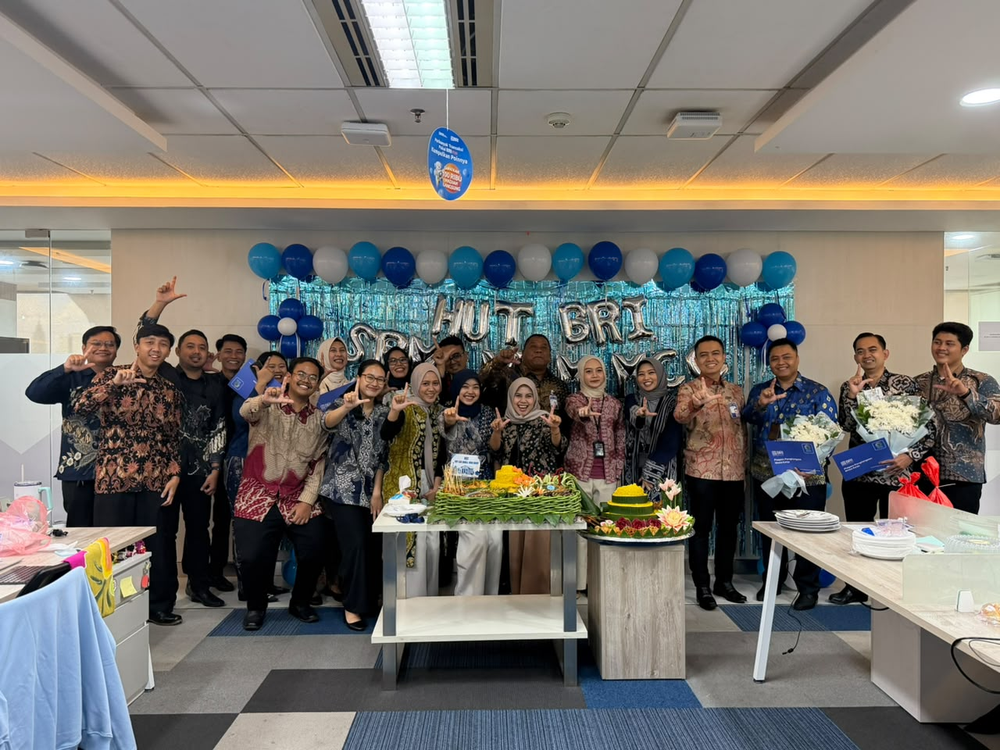
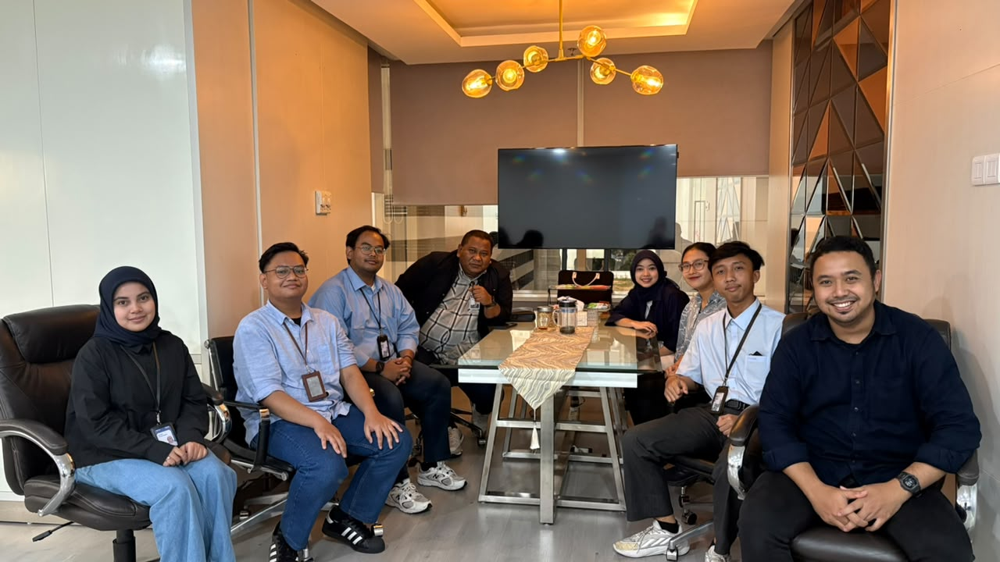
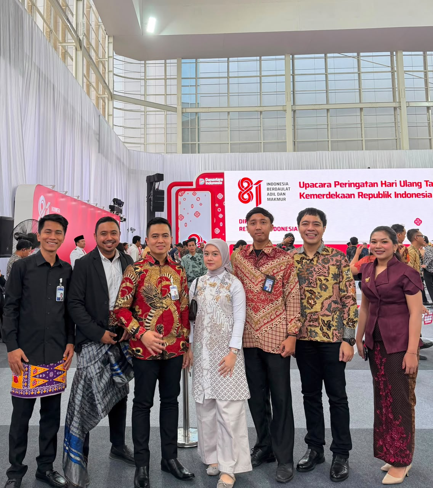
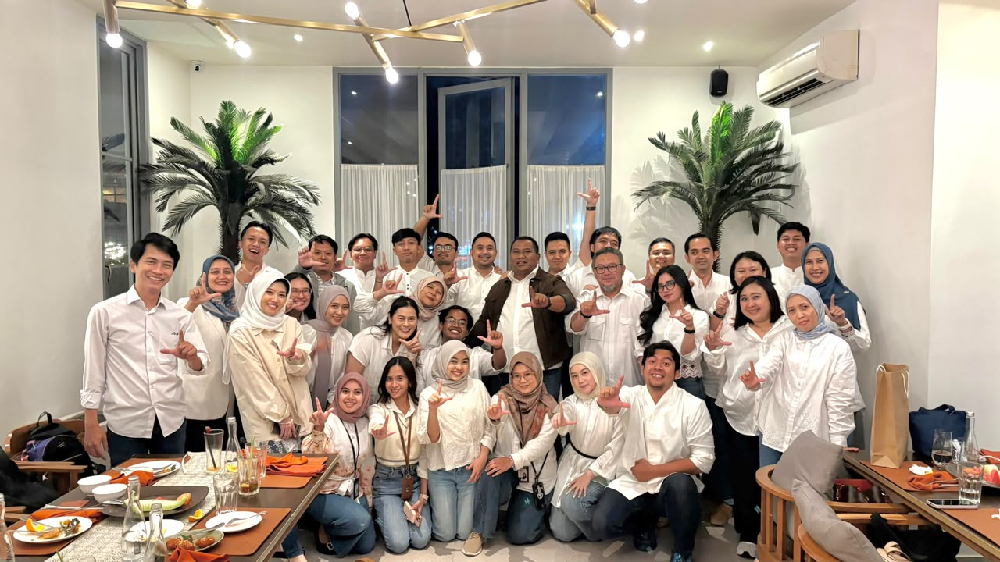
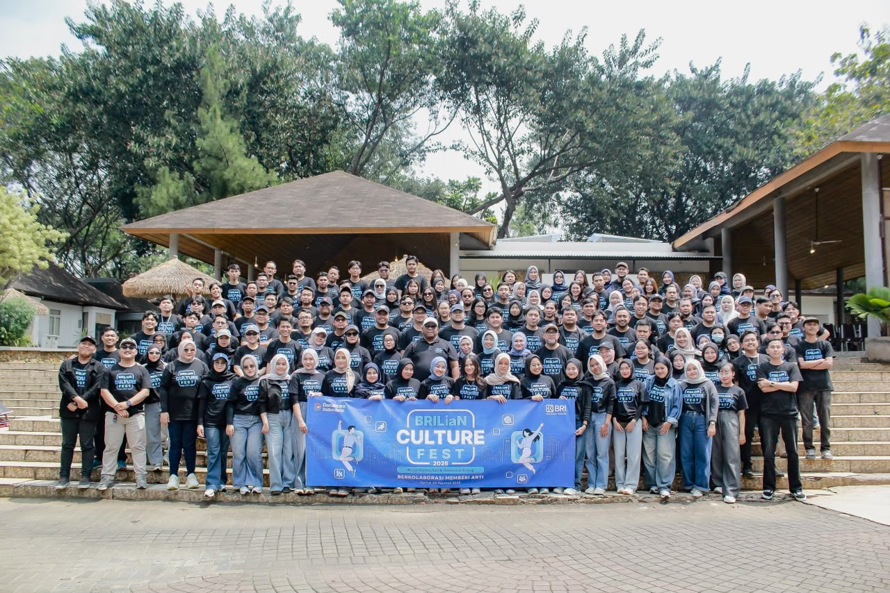

Turning messy records into decisions people can act on.
Computer Science graduate with 1 year of professional experience and internship exposure in data analytics, nationwide performance management, and business operations within leading state-owned enterprises in Indonesia’s banking and financial services sector.
What I actually do with data
I hold a B.Sc. in Computer Science from Bhayangkara Jakarta Raya University (GPA 3.71 / 4.00), with a focus on Data Science, Data Analytics, and Data Visualization.
Skilled in data-driven decision-making, business analysis, and cross-functional coordination. Currently seeking an entry-level management trainee opportunity.
Education
Bhayangkara Jakarta Raya University
September 2021 – August 2025Thesis: "Inventory Management Information System for Automotive Spare Parts Using the FP-Growth Algorithm."
- Applied association-rule mining to transaction data to identify purchasing patterns and support stock planning.
Experience
From a data analyst internship to a full-time role in litigation & recovery, across banking, pension administration, and telecommunications.
3 mos
PT Bank Rakyat Indonesia (Persero) Tbk
- Oversee REPRO Buyer Program performance, with Batch I (Jun–Sep 2026) delivering Rp124.3 billion in recovery cash-in from 142 verified referrals, against Rp621.7 million in referral rewards (0.5% of cash-in).
- Supervise end-to-end REPRO Buyer Program coordination as Program PIC, overseeing implementation across 18 Regions and 74 Areas, managing 100+ submissions and 500+ supporting documents.
- Coordinated Regional Offices during Gebyar Lelang Serentak Nusantara (nationwide simultaneous auction program), verifying auction data daily so Head Office could track collateral sales accurately and on time.
- Reconciled and cleansed recovery data so figures reported to Head Office are accurate and consistent.
- Developed Excel and SharePoint dashboards to monitor verified referrals, monthly cash-in by segment, submission status, documentation completeness, and regional performance, enabling data-driven oversight and early identification of underperforming regions.
- Drive cross-functional coordination among Collection & Recovery solid lines (Regional, Area to Branch Offices), and Head Office to resolve data discrepancies and documentation gaps, ensuring timely and seamless program execution.
PT Bank Rakyat Indonesia (Persero) Tbk
- Cleansed ~3,000 field-collection records daily with Python (Pandas) and validated data for ~10,000 micro and consumer credit accounts before management reporting.
- Consolidated reporting inputs from approximately 2,000 field collectors into structured daily, weekly, and monthly performance reports, strengthening monitoring and cross-period performance evaluation.
- Converted raw transaction data into actionable analytical reports to support credit risk assessment and collection strategy optimization.
- Executed large-scale data migration and validation for approximately 150 field collectors per Regional Office, ensuring seamless system implementation with zero data-integrity issues at go-live.
PT Taspen (Persero)
- Conducted daily verification of approximately 30 pensioner records and processed fingerprint, facial, and voice biometric data uploads in accordance with established data security and handling procedures.
PT Telkom Indonesia
- Streamlined employee record management to improve data accessibility and retrieval, while developing a Telegram-based automation system to facilitate communication and accelerate inquiry resolution between STO staff and the Witel team.
Additional Technical Training
Bootcamps completed alongside my degree.
Front End Development Bootcamp, Maxy Academy
- PHP and Bootstrap; built responsive pages and a data-driven personality-test website.
Web Development Bootcamp, Infinite Learning
- JavaScript and Tailwind CSS; served as Project Manager for the final project, an on-demand vehicle workshop platform.
Projects
Field Collection Performance Monitoring & Reporting
- Managed daily reports of 2,500+ field-collection records under Retail Collection & Recovery Group.
- Developed a standardized input form to minimize inconsistent formatting and data-entry errors.
- Validated and consolidated data to improve reporting accuracy and consistency.
Achievements & certification
Skills & languages
Moments on the job
A few snapshots from my time at BRI — team milestones, internal events, and the people I work with day to day.




